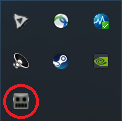
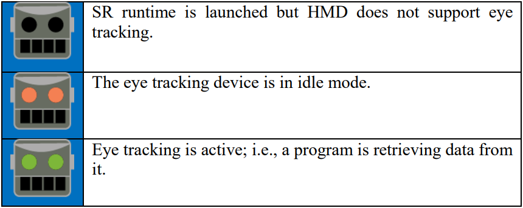
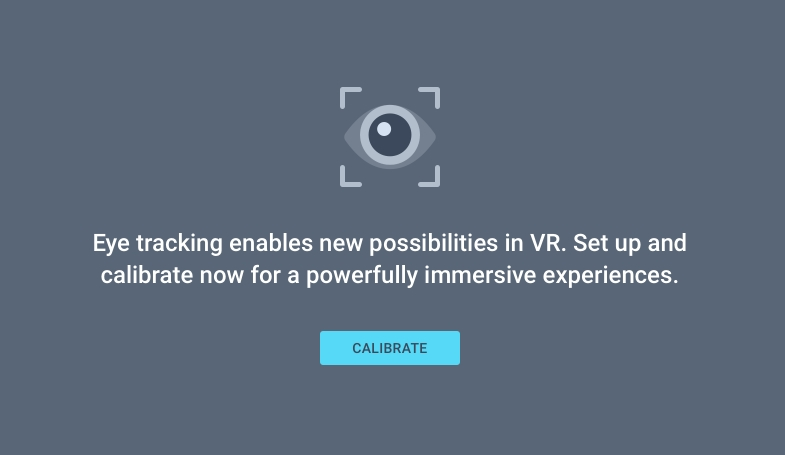
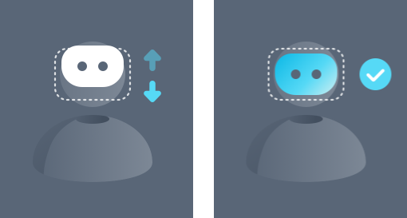
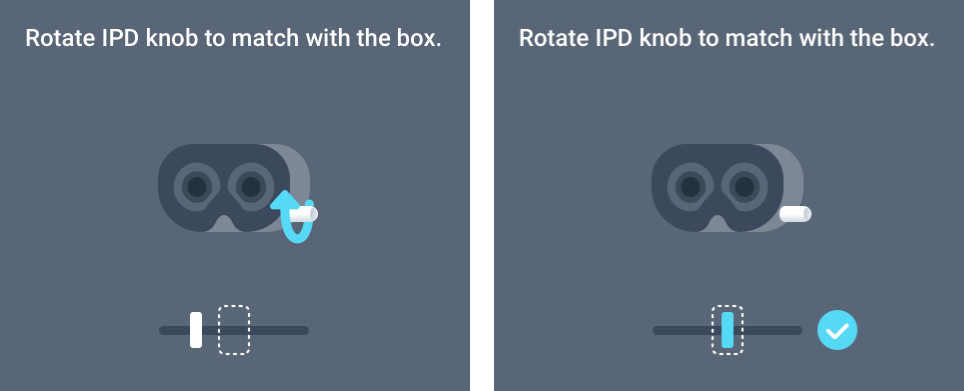
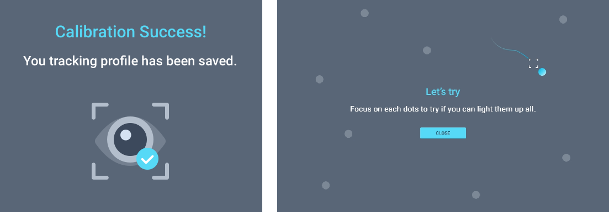

About the Vive SRAnipal SDK
The Vive SRanipal SDK is developed to help software developers create an eye-aware application with actual facial expressions on make-believe 3D avatars. anipal stands for animation pal.

System requirements
To use Vive SRanipal SDK plugin, the following minimum software and hardware requirements should be met:
- Software requirements
- Windows 8.1 or later (64-bit)
- Unity 5.5.3 or later
- SteamVR (October 14 release or later)
- SR_Runtime 0.8.0.0 or later
- Hardware requirements
- Vive HMD with Eye capability
Limitations
- Support Windows 64-bit only
SDK Folder Structure
- SRanipal_
version\- SRanipal_SDK_Guide.pdf
- 00_Runtime\
- SR_Runtime.exe
- 01_C\
- Document\Document_C.lnk: (C API reference)
- SRanipal\
- SRanipal_Sample\
- SRanipal_Sample.sln
- 02_Unity\
- Document\
- Getting Started with SRanipal in Unity.pdf
- Document_Unity.lnk (SRanipal API reference)
- FaceGym\
- FaceGym.exe
- Vive-SRanipal-Unity-Plugin.unitypackage
- Document\
- 03_Unreal\
- Document\
- Getting Started with SRanipal in Unreal.pdf
- Document_Unreal.lnk (SRanipal Unreal API reference)
- Vive-SRanipal-Unreal-Plugin.zip
- Document\
How to Use SR_Runtime
Installing SR_Runtime
To enable eye tracking capability, you must download SR_Runtime installer from this link: https://dl.vive.com/SRSDK/runtime/VIVE_SRanipalInstaller.msi. Follow the installer’s instruction to install SR_Runtime.
SR_Runtime Usage
- Ensure that Vive Pro Eye HMD is connected to your PC.
- Launch SR_Runtime and wait until the SRanipal status icon appears in the notification tray — see the image below. 
- The status icon reflects the status of your tracking devices: 
- The status icon reflects the status of your tracking devices:
- Start SteamVR (If not running already)
- Put on your HMD.
- Start eye calibration (See more detail in next section)
- Done! You are ready to develop or use eye-aware applications
- If you want to quit SR_Runtime.exe, right-click on the status icon and click Quit to stop SR_Runtime.
Build C Sample Code
- Open the solution file of the sample code at
\01_C\SRanipal\SRanipal_Sample.slnwith Visual Studio 2015. - For details about this API, refer to this API document.
Build the Unity Plugin
- Open unity and create a new 3D project.
- Select Asset > Import Package > Custom Package.
- Select the
Vive-SRanipal-Unity-Plugin.unitypackage - In the Importing Package dialog, ensure that all package options are selected and click on Import.
- Accept any API upgrades if prompted.
Opening a Sample Scene
- In the Unity Project window, find the scene file Sample.unity in Asset > ViveSR > Scenes.

- Ensure that all Requirements are met and then click Play.
- For details about this sample, please refer to
\02_Unity\Plugin\Getting Started with SRanipal in Unity.pdf. - For details about this API, please refer to
\02_Unity\Document_Unity.lnk.
Eye Calibration
To calibrate for the eye-tracking feature of SRanipal, please follow the below process. Note that for the highest precision, it is recommended to recalibrate for different users, as the eye positions and the pupillary distance are different for each individual.
- To start eye calibration, press VIVE controller’s system button and the calibration program will show an overlay window on your HMD. 
- If you can’t find it in your overlay window, launch SR_Runtime to open it.
- Press Calibrate to start and it starts by adjusting your HMD position 
- The second stage is adjusting your IPD value, as shown below. 
- After that, it will guide you to do gaze calibration. Please look at the blue-dot sequentially shown at the center, right, left, upper and lower of panel till success information is shown.
- The program will close automatically.
- Done! You are ready to develop eye-aware applications.
- Now you can have a try or press VIVE controller’s system button to quit eye calibration. 
Known Issues
- If your HMD requires a firmware update, the below window will pop up. During the process, all eye-relative applications are disabled.

- After the firmware update, the below notification will show up. Reboot the SR_Runtime.exe to use eye-relative functions.